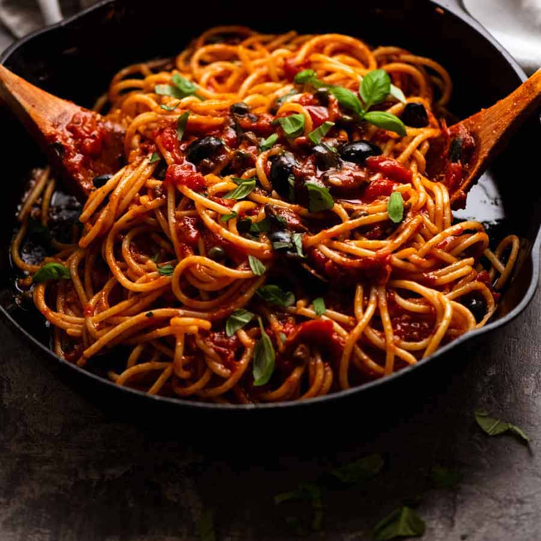

Odin Recipes
Spaghetti This is absolutely the best dish of all dishes!!
I will be updating my recipe here.
-
Ingredients
- 2 jars of Ragu
- Parmesan
- Noodles
- Tomatoes
- Mushroom
-
Steps
- Heat up the sauce
- Boil the noodles
- Sautee the vegetables
- Dice the tomatoes
- Dice the mushroom